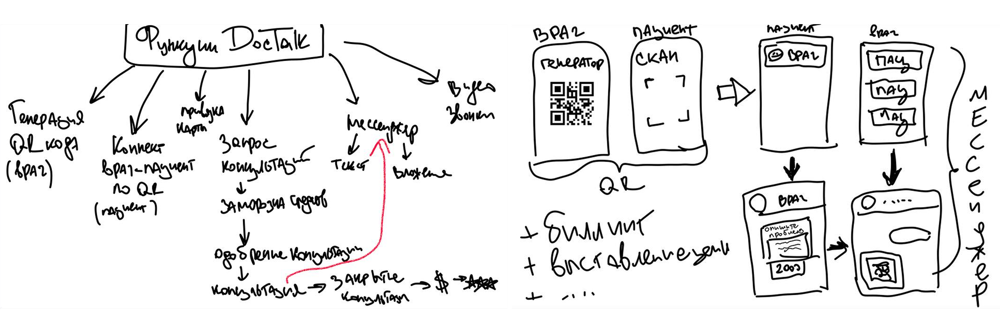
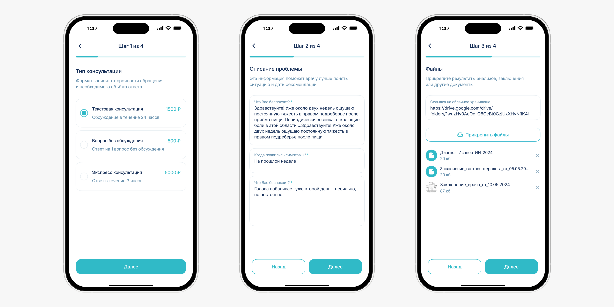
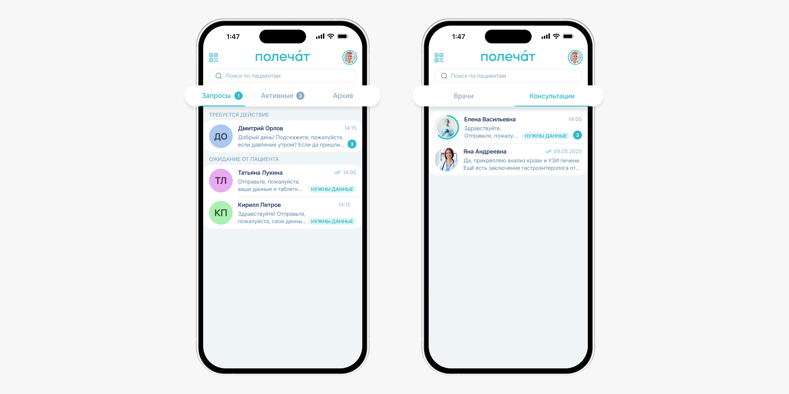
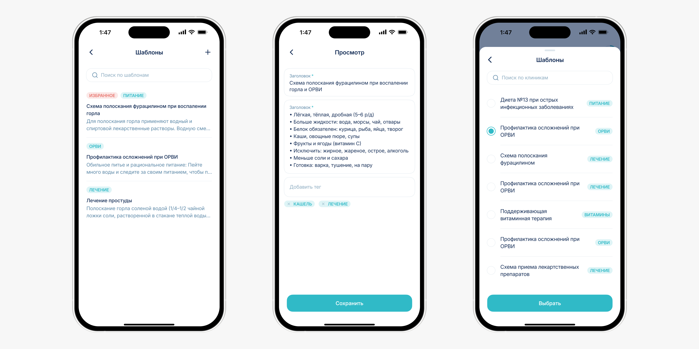
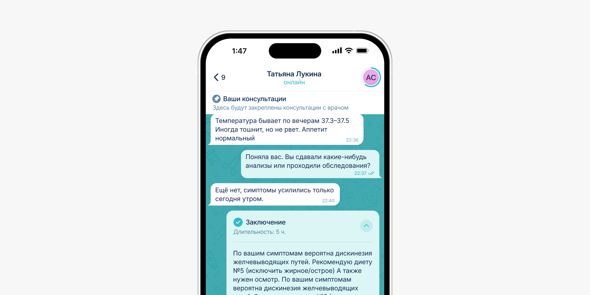
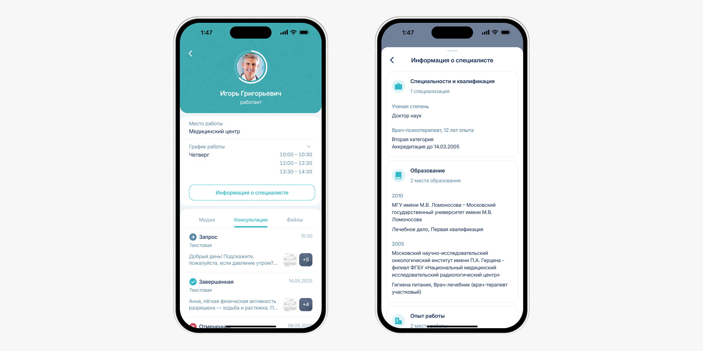
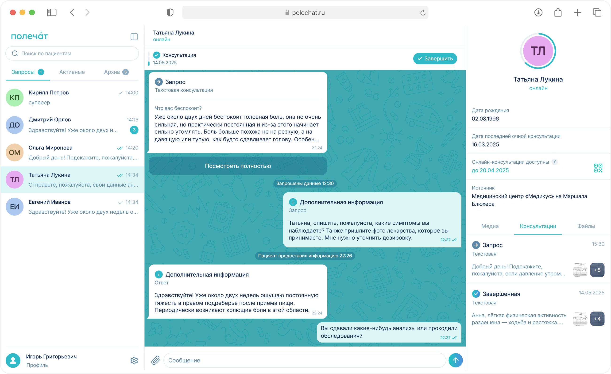

Спроектировала с нуля B2B2C-сервис для медицинских консультаций
Polechat — телемедицинский продукт для частных клиник и врачей, который переводит консультации из мессенджеров в легальное и управляемое пространство.
март 2025 — май 2026
 Somalab
Somalab
на 42%
260+
2 приложения + админ-панель
Пилот в 2 клиниках

Задача
Врачи вели консультации в WhatsApp: история переписки терялась, данные пациентов не сохранялись, монетизировать общение было невозможно. Пациенты теряли назначения, не могли быстро получить помощь и не понимали, куда обращаться повторно. С июня 2025 это стало ещё и незаконным, так как вступил в силу ФЗ № 41-ФЗ.
Продукт нужно было выстроить под две принципиально разные роли с разной логикой работы, встроить монетизацию прямо в сценарий консультации и дать клиникам инструмент контроля.
Моя роль
Я вела дизайн продукта с нуля, включая:
- Лид-дизайн двух приложений от концепции до пилота
- Приоритизация фич
- Проектирование пользовательских флоу, подписочных моделей
- Дизайн-система, UI-кит, прототипы всех ключевых сценариев
- A/B тестирование
- Админ-панель для клиник
- Спецификации для разработки, дизайн-ревью, коммуникация с командой и юристами
Сложности
Самым очевидным решением было сделать просто чат. Но Полечат должен был работать как полноценный сценарий консультации с оплатой, статусами, документами и разными сценариями взаимодействия.
Заказчик пришёл с наброском на листе бумаги с обобщенной схемой флоу. Без опыта в телемедицине я выстраивала структуру продукта и логику двух ролей с нуля самостоятельно.

Подход
Так как продукт собирался с нуля, сначала нужно было зафиксировать логику сервиса: кто участвует в консультации, какие действия доступны врачу и пациенту, где появляется оплата, как меняются статусы и что должна видеть клиника.
Я собрала несколько вариантов продуктовой структуры и прототипов, чтобы быстро согласовать сценарии с командой, проверить ограничения и отделить базовый MVP от функций следующих версий.
Исследование
Провела два опроса с врачами и пациентами частных клиник. Хотела понять, как люди взаимодействуют с врачом онлайн и что мешает пользоваться телемедициной. Дополнительно изучила открытые исследования рынка. Описала сегменты через Job Stories и построила пользовательский путь консультации — это помогло выявить точки потери и сформулировать три вывода, которые легли в дизайн:
Скан QR после очного приёма у своего врача и онбординг с подсказками, прогрессбары
Сервис работает только с врачами, которых пациент уже посетил очно
В продукт добавлен модуль шаблонов сообщений для типовых рекомендаций
Интерфейс чата как основа, вся структура сделана через элементы мессенджера
Ключевой инсайт:
Пользователи готовы консультироваться онлайн, но только если понимают, что происходит и что будет дальше.
Более подробное описание методологии, опросов и инсайтов
Ключевые решения
1. Табы-папки вместо общей ленты
Первый вопрос, который нужно было решить — как врач управляет потоком обращений. Рассмотрела три варианта: общую ленту чатов, топики по аналогии с Telegram и табы-папки. Провела сравнительное UX-тестирование навигации на интерактивных прототипах с врачами.
Общая лента отпала сразу, так как при росте обращений врачам было неудобно следить за потоком. Топики казались логичными, но тесты выявили перегруженность интерфейса, врачам было непонятно, куда смотреть в первую очередь.
По итогам тестирования 67% врачей выбрали табы-папки как наиболее понятный вариант.

2. Шаблоны сообщений для быстрых ответов
Интервью с врачами показали, что повторяющиеся ответы тратят много времени. Типовые рекомендации и инструкции каждый раз приходилось писать вручную.
Я проверила проблему через метрику time to first response. В тестовых сценариях самые длинные ответы были там, где врачу нужно было формулировать рекомендацию с нуля.
Спроектировала модуль шаблонов, чтобы врач мог заранее создать ответы, распределить их по категориям, быстро вставить в чат и адаптировать под пациента. На тестировании среднее время подготовки типового ответа сократилось на 42%.

3. Структурированная консультация в чате
Чтобы консультация не превращалась в бесконечную переписку, выделила ключевые этапы: запрос, уточнение, отмена, заключение и просрочено.
На первом UX-тесте 50% участников не понимали сразу, к кому относятся системные карточки по центру чата. После итерации я встроила их в переписку. Блоки остались визуально выделенными, но считывались как часть диалога. Запрос пациента закрепила сверху, чтобы врач не терял контекст обращения и мог быстро сверяться с исходной жалобой во время консультации.
После доработки 83% участников самостоятельно определяли текущий этап консультации и следующий шаг.

4. Профиль врача внутри чата
Я встроила профиль врача в пространство чата, чтобы пользователь мог проверить специалиста, открыть документы и найти материалы консультации без выхода из диалога.
На UX-тестировании 87% участников отметили, что формат по аналогии с мессенджером, где данные о собеседнике, файлы, медиа и история общения собраны в одном месте, удобнее отдельного профиля врача.

Веб-версия
После интервью с врачами стало понятно, что мобильный формат подходит для быстрых ответов, но плохо закрывает полноценный рабочий сценарий. Поэтому я перенесла логику консультаций в веб-формат и сохранила всю структуру.

Результаты
Продукт запущен в пилот в 2 клиниках. Собираем данные на реальных врачах и пациентах.
Ключевая метрика 83% участников тестирования самостоятельно определяли этап консультации и следующий шаг — без подсказок. Основной сценарий консультации остался простым и не перегруженным.
По итогам тестирования 67% врачей выбрали табы-папки как наиболее понятный вариант.